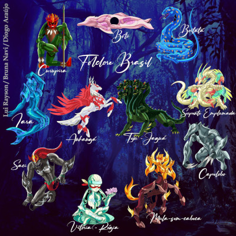
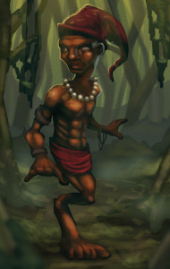
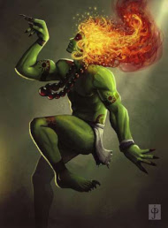

Folclore brasileiro é a junção de lendas, contos, mitos e histórias sobre criaturas e seres fantásticos que habitam o imaginário de povos tradicionais de diversas regiões do país. O folclore do Brasil é formado com base na mistura de tradições típicas das várias culturas que formam a identidade na nação, com destaque para a portuguesa, indígena e africana.
Além das histórias, costumes e lendas de personagens criados a partir da cultura popular desses povos, o folclore brasileiro também é composto por festas, brincadeiras, crenças, comidas típicas e outros costumes que eram transmitidos oralmente entre as diferentes gerações.
Devido a diversidade cultural do país, o Brasil tem um folclore muito rico. No entanto, apenas a partir do século XIX é que começou a ganhar importância e destaque por parte de autores e intelectuais. O Brasil celebra o Dia do Folclore em 22 de agosto, data esta que costuma ser celebrada principalmente nas escolas de todo o país.

Lendas Famosas
Saci
O saci-pererê é um ser mítico que habita as florestas e tem como grande característica o fato de ser travesso e pregar peças nas pessoas. Ele é um ser pequeno, com cerca de meio metro de altura, embora existam versões da lenda que falem que ele pode chegar a ter três metros de altura, se quiser.
Seguindo a descrição, na lenda saci é negro e possui apenas uma perna, com a qual se locomove rapidamente. É conhecido também por não possuir cabelos e nem pelos corporais, usar um gorro vermelho na cabeça e praticar o hábito do fumo pelo cachimbo. Algumas versões da lenda apresentam-no com olhos vermelhos, enquanto outras não trazem essa característica.

Curupira
O curupira é um ser da floresta e atua como seu guardião contra todos aqueles que procuram destruí-la. Suas características físicas são bastante conhecidas, a lenda diz que o curupira é pequeno (alguns chamam-no de “anão”), tem os cabelos vermelhos como fogo, e seus pés são posicionados ao contrário, com os calcanhares para frente.
Alguns falam que o curupira tem o corpo, dentes ou olhos verdes, outros, que ele é careca, e alguns acreditam que ele é peludo. Independente da versão, todos acreditam em sua força física sobrenatural, apesar de ser muito pequeno.

Caipora
Caipora é uma índia anã, com cabelos vermelhos e orelhas pontiagudas. Existem versões em que seu corpo é todo vermelho e noutras, verde.Ela vive nua nas florestas e tem o poder de dominar e ressuscitar os animais. Seu intuito principal é defender o ecossistema e, portanto, faz armadilhas e confunde os caçadores.
Quando sente que algum caçador entra na floresta com intenções de abater animais, ela solta altos uivos e gritos assustando esses homens.Sua intenção é cuidar desses animais e proteger o ambiente. Reza a lenda que sua força é maior nos dias santos e nos finais de semana